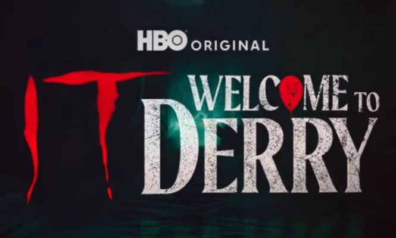

Após sucesso de "It: Bem-Vindos a Derry", HBO confirma nova série para 2027
Produção derivada do universo de Stephen King continuará explorando os mistérios da cidade de Derry.
Publicado em 2026 • Redação Geek News

Após o enorme sucesso da série "It: Bem-Vindos a Derry", a HBO confirmou oficialmente que uma nova produção ambientada no universo criado por Stephen King já está em desenvolvimento. A série deve expandir ainda mais a história da cidade fictícia de Derry, conhecida pelos eventos sobrenaturais ligados à criatura Pennywise. Segundo os produtores, a nova trama irá explorar acontecimentos que ocorreram em diferentes períodos da história da cidade.
De acordo com informações divulgadas pela emissora, a série deve aprofundar o passado sombrio de Derry e revelar novos personagens que tiveram contato direto com a entidade que aterroriza a cidade. A ideia é mostrar como o mal que habita o local influencia gerações diferentes ao longo dos anos.
Os criadores afirmaram que o projeto pretende manter o clima de terror psicológico que marcou tanto os filmes quanto a primeira série derivada da franquia. Elementos como suspense, mistério e atmosfera sombria continuarão sendo peças centrais da narrativa.
Além disso, os produtores também confirmaram que alguns personagens conhecidos podem aparecer na nova produção, conectando diretamente a história com eventos já mostrados anteriormente no universo de It.
Especialistas da indústria acreditam que a decisão da HBO de expandir esse universo demonstra a força que as adaptações de Stephen King continuam tendo no entretenimento moderno.
A expectativa dos fãs é que a série consiga manter o alto nível de qualidade visual e narrativa apresentado pelas produções anteriores da franquia.
Embora ainda não exista uma data oficial de estreia definida, a previsão inicial aponta para um lançamento no início de 2027.
Com essa confirmação, o universo de It continua crescendo e promete trazer novas histórias assustadoras ambientadas na misteriosa cidade de Derry.